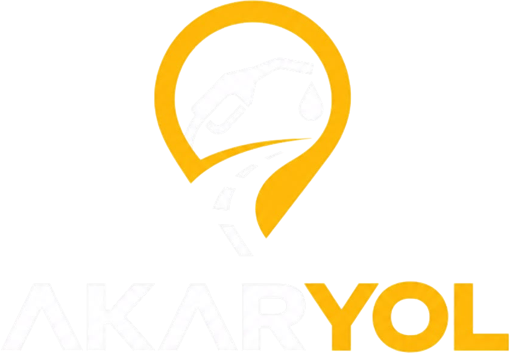

Akaryol, aracının menzilini hesaba katarak yolculuğundaki en uygun yakıt duraklarını planlar, istasyonları EPDK fiyatlarıyla gösterir ve seni sesli navigasyonla götürür.
Harita, fiyat, plan ve navigasyon tek uygulamada. Yolculuğa çıkmadan önce de yoldayken de.
Gideceğin yeri yaz; Akaryol aracının tüketimine ve depodaki yakıta göre rotadaki en uygun durakları ve ne kadar alman gerektiğini hesaplar. Sapma süresini, fiyatı ve tercih ettiğin markayı birlikte tartar.
Akaryakıt ve LPG istasyonları fiyat rozetleriyle haritada. WC, market, restoran, oyun parkı, mescit ve 7/24 açık filtreleri.
Dönüş dönüş Türkçe talimatlar, trafik yoğunluğuyla renklenen rota, hız sınırı, radar ve kaza uyarıları. Uygulamadan çıksan da navigasyon sürer.
Yürürlüğe girmeden önce EPDK'ya bildirilen değişiklikleri yakalar; "şimdi doldur mu, bekle mi?" sorusuna net cevap verir.
EPDK'daki halka açık şarj istasyonları; AC/DC ve güç filtresi, soket bilgisi ve işletmecinin kendi sitesindeki tarife.
İstasyonun fiyat geçmişini 30 gün, 3 ay veya 1 yıl olarak gör. Hedef fiyatını koy, o fiyata inince bildirim al.
Dolumlarını kaydet; Akaryol gerçek tüketimini öğrenir, km başı maliyetini ve aylık harcamanı çıkarır.
Yakıt türünü, depo hacmini ve tüketimini gir. Birkaç dolumdan sonra Akaryol gerçek tüketimini kendisi öğrenir.
Hedefini ara ya da haritadan seç. Akaryol rotayı, alternatifleri ve trafikli varış süresini gösterir.
Durakları, alınacak litreyi ve maliyet aralığını gör; tek dokunuşla sesli navigasyonu başlat.
Akaryakıt ve LPG fiyatları EPDK'nın yayımladığı verilerden, il ve ilçe bazında günde birkaç kez yenilenir. Bilmediğimiz bir şeyi biliyormuş gibi göstermeyiz.
Hayır, uygulama ücretsizdir. İstasyon sıralaması ve öneriler hiçbir koşulda ücretli etkiye açılmaz; ileride sponsorlu içerik olursa ayrı ve açıkça işaretli gösterilir.
Akaryakıt ve LPG fiyatları EPDK'nın yayımladığı resmî verilerden alınır. Fiyatlar marka, il/ilçe ve yakıt türü bazındadır; bu yüzden her istasyonda fiyatın kapsamı (ilçe, il, yaka) açıkça yazılır.
Planlayıcı, tüketimi kötümser uçtan hesaplar ve hiçbir planda deponun %10'luk rezerv tabanının altına inmez. Bu tabanı yükseltebilirsin ama düşüremezsin. Menzil de tek bir sayı değil, gerçekçi bir aralık olarak gösterilir.
Evet, haritada EPDK'daki halka açık şarj istasyonlarını soket türü ve gücüyle görebilirsin. Tarifeler işletmecinin kendi sitesinden alınır ve kaynağıyla birlikte gösterilir.
Konumun yalnızca harita ve navigasyon için kullanılır. Yolculuk kaydı paylaşımı varsayılan olarak kapalıdır ve yalnızca sen açarsan, şifreli bağlantıyla gönderilir. Hesabını ve verilerini istediğin an silebilirsin. Ayrıntılar gizlilik metninde.
İlk sürüm Android için hazırlanıyor. iOS sürümü sonraki adımda planlanıyor.

Bir sonraki yolculuğunda yakıtı düşünme. Akaryol çok yakında Google Play'de.
Yakında Google Play'de